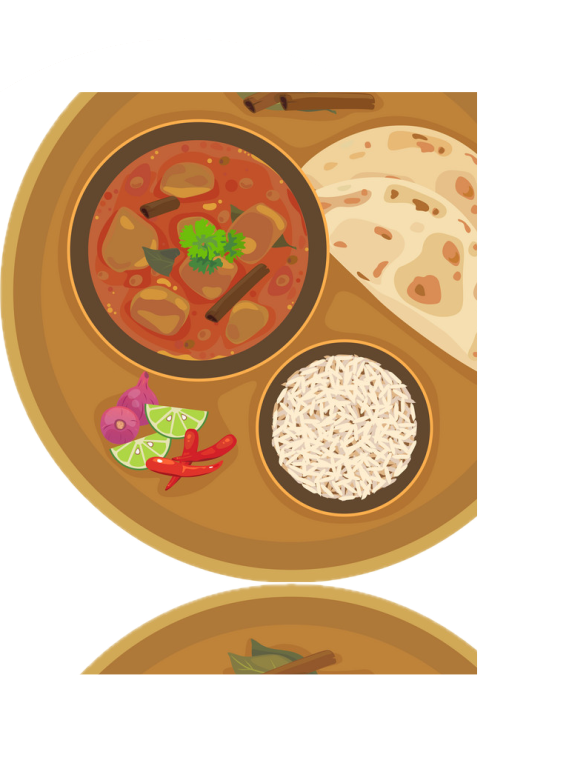
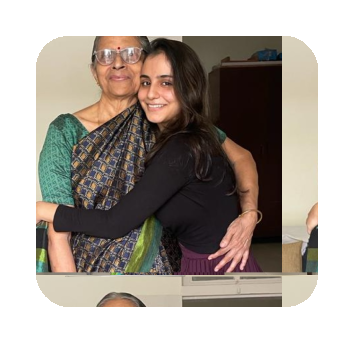

Mangalore
recipes straight from grandma's kitchen
What are you in the mood for today?
Click on suprise me and get today's recipe!
Grandma's Cookbook

Click to flip the pages & explore more recipes
Get to know the cooks!
The mother - daughter duo based in Mumbai, India have the best granddaughter/daughter who contributes to the cooking process by relishing all their dishes and occasionally annoy them by eating the prepped ingredients before they can be used for cooking.
